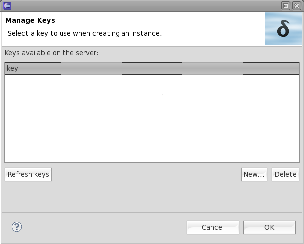
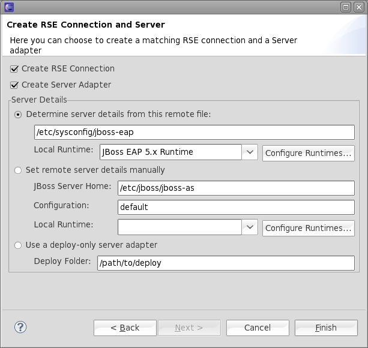
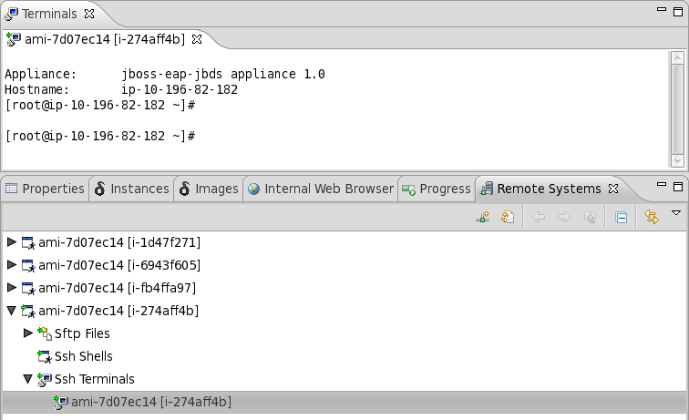
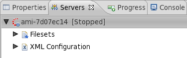

< Main Index GWT Integration >
General |
|
| Deltacloud Tools | A lot of work was dedicated to improve user experience for Deltacloud tools. We fixed a lot of bugs and we now enable you to deploy web applications to cloud instances. |
| Deltacloud Server |
We updated the tools to be able to work against the latest Deltacloud server that's available in binary form. The tools currently work well against a Deltacloud server running version 0.1.2.
Related Jiras: JBIDE-7911 |
| Key Management |
The keys are now managed on the server. You may list and choose among the keys that are available on the Deltacloud server.
In consequence we now create and delete keys on the server. We now also add new keys to the ssh preferences automatically, you do not have to add them manually. The benefit is pretty clear: If your instance runs an ssh-daemon that accepts the instance key to log you in, you wont need any further steps to connect by ssh. Create a key, launch the instance and open up an SSH shell to it.  Related Jiras JBIDE-7763, JBIDE-8186, JBIDE-8126, JBIDE-8110, JBIDE-8096, JBIDE-8081, JBIDE-8005, JBIDE-7979, JBIDE-7598 |
| Instance view |
We added a columns that shows the ID of the instances that are available on a cloud.
Related Jiras: JBIDE-8183, JBIDE-7926 |
| Image view |
We added architecture and description columns to the image view.
Related Jiras: JBIDE-8134, |
| Launch instances |
The major improvement we introduced with CR1 is that you now also get a server adapter that allows you to deploy web applications to your instance.
We introduced a second page to the wizard that launches instances. It allows you to explicitly create an Eclipse Remote System Explorer (RSE). RSE allows you
to browse the filesystem on your instance and to open up an ssh terminal to it. Even more important this page offers an option to create a (WTP) server adapter. You'll be able to deploy any WTP compliant web project to your instance with it. We also fixed a lot of bugs and improved overall stability. launch instance, 2nd wizard page:  The "Check Remote Details" option will look at the file indicated, and treat it as a properties file. This properties file must include the properties "JBOSS_HOME" and "JBOSS_CONFIG". It will then use these details to construct a new server adapter. If the file is not found, or properties are missing, it will redirect you to the new server adapter wizard. remote system explorer, ssh-shell:  server adapter:  Related Jiras: JBIDE-7763, JBIDE-8185, JBIDE-8144, JBIDE-8099, JBIDE-8095, JBIDE-8082, JBIDE-8083, JBIDE-7917, JBIDE-7912, JBIDE-7882, JBIDE-7834, JBIDE-7642, JBIDE-8020, JBIDE-8022, JBIDE-8021, JBIDE-8038, JBIDE-8000, JBIDE-7984, JBIDE-7980, JBIDE-7918, JBIDE-7917, JBIDE-7818 |
| Instance Alias |
EC2 in particular does not allow you to name instances.
The deltacloud server therefore does not store names for instances that are launched on EC2. We work around this issue by giving you the possibilty to store an alias locally.
Related Jiras: JBIDE-8135, JBIDE-8129, JBIDE-8051, JBIDE-7959, JBIDE-7294 |
| Multi-selection |
Previous versions of the Deltacloud tools were not considering multiple selected items. We now execute most actions on all the items that you select.
Related Jiras: JBIDE-7557, JBIDE-7916, JBIDE-7688 |
| Background operations |
We now moved most costy operations (loading from the server etc.) to background jobs. The UI therefore feels much more fluid and does not block any more.
Related Jiras: JBIDE-7813, JBIDE-7554 |
| Various bugs |
We fixed a lot of individual bugs and improved the overall experience in using the Deltacloud tools.
Related Jiras: JBIDE-8111, JBIDE-8104, JBIDE-8091, JBIDE-7935, JBIDE-7695, JBIDE-7954, JBIDE-7459, JBIDE-7371, JBIDE-8061, JBIDE-8052, JBIDE-8006, JBIDE-8007, JBIDE-7986, JBIDE-8014, JBIDE-7977, JBIDE-7880, JBIDE-7872, JBIDE-7864, JBIDE-7863, JBIDE-7856, JBIDE-7853, JBIDE-7852, JBIDE-7849, JBIDE-7848, JBIDE-7847, JBIDE-7836, JBIDE-7819, JBIDE-7790, JBIDE-7738, JBIDE-7731, JBIDE-7714, JBIDE-7697, JBIDE-7695, JBIDE-7682, JBIDE-7594, JBIDE-7592, JBIDE-7543, JBIDE-7522 |